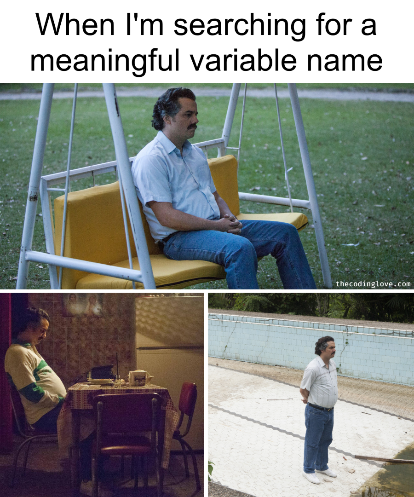

library(readr) # for read_csv()
library(dplyr) # for %>%, rename(), pull(), and other functions used in the pipe examples
library(janitor) # for clean_names(), round_half_up()5 The pipe and renaming
Raw data from psychology studies rarely arrives with tidy, meaningful column names: experiment software and survey platforms often produce names with spaces, capital letters, symbols, or numbers at the start. Before you can process the data, you need to know what it contains and give its columns names that are easy to work with.
This chapter introduces the pipe (%>%), which lets you write data processing code as a readable series of steps, and shows how to explore a data frame’s rows and columns and rename them with rename() and janitor::clean_names(). It builds on loading data with read_csv() from the Loading, viewing and saving data chapter. The pipe is used in every later chapter.
5.1 Exploring column names and rows
As in the last chapter, we load data using relative paths and read_csv() and view the first few rows with head().
dat_demographics_raw <- read_csv(file = "../data/raw/data_demographics_raw_messy.csv")
head(dat_demographics_raw)| subject and session info columns | …2 | task structure columns | …4 | response columns | …6 | …7 | …8 |
|---|---|---|---|---|---|---|---|
| NA | NA | NA | NA | NA | NA | NA | NA |
| date | Subject Code | build | block code and trial number | Trial Code | Key response (use this!) | correct | 0 ms onset RT |
| 23.06.2022 | 548957868 | 06.06.2000 | demographics_2 | age | 23 | 1 | 1372 |
| 23.06.2022 | 548957868 | 06.06.2000 | demographics_3 | gender | female | 1 | 619 |
| 23.06.2022 | 548957868 | 06.06.2000 | demographics_2 | psychiatric diagnosis | schizophrenia | 1 | 1372 |
| 23.06.2022 | 548957868 | 06.06.2000 | demographics_3 | prolific ID | asldkjaao87809 | 1 | 619 |
Unfortunately, the ‘data_demographics_raw_messy.csv’ data set is, as its name suggests, somewhat messy. The column names are on the third row, not the first one.
5.1.0.1 Exercise
How should you alter the above code to ignore the first two lines when reading the data in to R?
NoteClick to show answer
dat_demographics_raw <- read_csv(file = "../data/raw/data_demographics_raw_messy.csv",
skip = 2) # add skip = 2 to ignore the first two lines
head(dat_demographics_raw)| date | Subject Code | build | block code and trial number | Trial Code | Key response (use this!) | correct | 0 ms onset RT |
|---|---|---|---|---|---|---|---|
| 23.06.2022 | 548957868 | 06.06.2000 | demographics_2 | age | 23 | 1 | 1372 |
| 23.06.2022 | 548957868 | 06.06.2000 | demographics_3 | gender | female | 1 | 619 |
| 23.06.2022 | 548957868 | 06.06.2000 | demographics_2 | psychiatric diagnosis | schizophrenia | 1 | 1372 |
| 23.06.2022 | 548957868 | 06.06.2000 | demographics_3 | prolific ID | asldkjaao87809 | 1 | 619 |
| 23.06.2022 | 504546409 | 06.06.2000 | demographics_2 | age | 48 | 1 | 3946 |
| 23.06.2022 | 504546409 | 06.06.2000 | demographics_3 | gender | yes | 1 | 3724 |
The skip argument tells read_csv() how many lines to ignore before it reads the column names. See the Loading, viewing and saving data chapter.
The rest of the chapter uses the dat_demographics_raw data frame loaded in this answer.
5.1.1 Count rows and columns with nrow() and ncol()
Processing and cleaning any data set requires an understanding of what it contains - as well as a thorough understanding of how the data was generated (e.g., the study’s design and specific implementation; what rows represent what measurement and in what way, etc.).
A rudimentary but important step to understanding what a data set contains is to know how many rows and columns it contains.
This is useful to check at multiple steps of your data processing to make sure you have not done something wrong by gaining or losing columns or rows that you should not.
Number of rows:
nrow(dat_demographics_raw)[1] 16Number of columns:
ncol(dat_demographics_raw)[1] 85.1.2 Viewing column names with colnames()
How would you know what variables are in a data frame? You can view the data frame, but it can also be useful to print them. Knowing what you have is one of the first steps to working with it.
colnames(dat_demographics_raw)[1] "date" "Subject Code"
[3] "build" "block code and trial number"
[5] "Trial Code" "Key response (use this!)"
[7] "correct" "0 ms onset RT" Later, when you’re used to using functions such as rename() and mutate(), you will often want a vector of column names that you can easily copy-paste into code, without all the extra white-space and including commas between them. For this, you can use dput():
dput(colnames(dat_demographics_raw))c("date", "Subject Code", "build", "block code and trial number",
"Trial Code", "Key response (use this!)", "correct", "0 ms onset RT"
)This takes the output of colnames() and applies dput() to it. When your data processing calls multiple functions in a row, this could get complicated to read and write. It’s therefore time to introduce ‘the pipe’.
5.2 The pipe
5.2.1 What is the pipe?
The output of the function to the left of the pipe is used as the input to the function to the right of the pipe.
[this function's output...] %>%
[...becomes this function's input]For example, the following code does the same thing with and without the pipe:
# print all column names as a vector - without the pipe
dput(colnames(dat_demographics_raw))c("date", "Subject Code", "build", "block code and trial number",
"Trial Code", "Key response (use this!)", "correct", "0 ms onset RT"
)# print all column names as a vector - using the pipe
dat_demographics_raw %>%
colnames() %>%
dput() c("date", "Subject Code", "build", "block code and trial number",
"Trial Code", "Key response (use this!)", "correct", "0 ms onset RT"
)5.2.2 Why use the pipe?
The pipe allows us to write code that reads from top to bottom, following a series of steps, in the same way that humans would describe and conduct the steps. Without the pipe, code is written from the inside out in the way that R understands it but humans do not as easily.
The utility of the pipe becomes more obvious when there are many steps in the workflow.
The following example uses functions we have not learned yet. We’ll cover them in later chapters. For the moment, the point is to demonstrate the usage of the pipe.
Without the pipe:
dat <-
mutate(
summarise(
group_by(
mutate(
rename(
readr::read_csv(file = "../data/raw/data_amp_raw.csv"),
unique_id = subject,
block = blockcode,
trial_type = trialcode,
rt = latency
),
fast_trial = ifelse(rt < 100, 1, 0)
),
unique_id
),
percent_fast_trials = mean(fast_trial) * 100
),
percent_fast_trials = round_half_up(percent_fast_trials, digits = 2)
)
# print the first few rows
head(dat, n = 10)| unique_id | percent_fast_trials |
|---|---|
| 4345805 | 3.66 |
| 13708908 | 0.00 |
| 14943693 | 0.00 |
| 32034696 | 0.00 |
| 47022865 | 0.00 |
| 59367911 | 0.00 |
| 72442795 | 0.00 |
| 75092407 | 2.44 |
| 83185292 | 0.00 |
| 85445170 | 15.85 |
Notice how the above code has to be written and read from the middle outwards: data is loaded, and what is loaded is used to rename() columns, and the output of that is used to mutate() (create) a new column, whose output is used to summarize() across rows for each participant.
This becomes much more linear and human-readable when we use the pipe:
dat <-
# read data from csv
read_csv(file = "../data/raw/data_amp_raw.csv") %>% # -> pass the output onward to the next function
# rename columns
rename(unique_id = subject,
block = blockcode,
trial_type = trialcode,
rt = latency) %>% # -> pass the output onward to the next function
# create a new variable from existing ones
mutate(fast_trial = ifelse(rt < 100, 1, 0)) %>% # -> pass the output onward to the next function
# summarize across rows, clustered by participant
group_by(unique_id) %>% # -> pass the output onward to the next function
summarise(percent_fast_trials = mean(fast_trial)*100) %>%
# round the percents to two decimal places
mutate(percent_fast_trials = round_half_up(percent_fast_trials, digits = 2))
# print the first few rows
head(dat, n = 10)| unique_id | percent_fast_trials |
|---|---|
| 4345805 | 3.66 |
| 13708908 | 0.00 |
| 14943693 | 0.00 |
| 32034696 | 0.00 |
| 47022865 | 0.00 |
| 59367911 | 0.00 |
| 72442795 | 0.00 |
| 75092407 | 2.44 |
| 83185292 | 0.00 |
| 85445170 | 15.85 |
5.2.2.1 Exercise
The following code calculates the mean percentage of fast trials across all participants, rounded to one decimal place. Rewrite it using the pipe, so that it reads from left to right (or top to bottom).
round_half_up(mean(dat$percent_fast_trials), digits = 1)[1] 1.2
NoteClick to show answer
dat$percent_fast_trials %>%
mean() %>%
round_half_up(digits = 1)[1] 1.2Start with the innermost object, then add each function in the order it is applied, from the inside out. The pipe passes the output to the first argument of the next function, so you only write the other arguments, such as digits = 1.
5.2.3 How to insert a pipe?
You can insert a pipe by typing %>% or using the following keyboard shortcuts.
- Windows: shift + Ctrl + M
- Mac: shift + Cmd + M
For other keyboard shortcuts in RStudio, see the chapter on Fundamentals.
5.3 Implicit arguments & the pipe
As in other cases in R, arguments can be passed to functions ‘explicitly’ (by naming the argument) or ‘implicitly’ (without names).
How the pipe works can be slightly clearer if we use explicit arguments.
The pipe passes the output of the preceding function on to the next function as ‘.’:
dat_demographics_raw %>% # output passed forward as '.'
head(x = .) %>% # output passed forward as '.'
colnames(x = .) %>% # -> output passed forward as '.'
dput(x = .)c("date", "Subject Code", "build", "block code and trial number",
"Trial Code", "Key response (use this!)", "correct", "0 ms onset RT"
)If not passed explicitly, the input is passed to the next function’s first argument. Most {tidyverse} functions are designed so that their first argument is the data (often called ‘.data’), which is why they work so smoothly with the pipe:
dat_demographics_raw %>% # output passed forward to first argument
head() %>% # output passed forward to first argument
colnames() %>% # -> output passed forward to first argument
dput()c("date", "Subject Code", "build", "block code and trial number",
"Trial Code", "Key response (use this!)", "correct", "0 ms onset RT"
)5.3.1 The two pipes: %>% vs. |>
%>% is the original pipe created for the {magrittr} package and used throughout the tidyverse packages. It is slightly slower but also more flexible: you can use the ‘.’ placeholder to pass the input to any argument, more than once, or inside another function call.
|> is a version of the pipe added more recently to base-R. It is slightly faster but less flexible. This speed only matters if you’re doing this with much larger data sets or very frequently (e.g., in Monte Carlo simulations).
The base R pipe (|>) also passes the input to the first argument by default. If you want to pass its output explicitly, you use ‘_’ instead of ‘.’, but with more restrictions: ‘_’ can only be used once, and only with a named argument (e.g., head(x = _), not head(_)). Example of explicit passing with the base R pipe |>:
dat_demographics_raw |> # output passed forward as '_'
head(x = _) |> # output passed forward as '_'
colnames(x = _) |> # output passed forward as '_'
dput(x = _)c("date", "Subject Code", "build", "block code and trial number",
"Trial Code", "Key response (use this!)", "correct", "0 ms onset RT"
)If you’re not sure, it’s usually easier to use %>%.
This book uses %>% throughout, except where the two pipes are being compared.
5.4 Renaming columns
5.4.1 Why rename
Column names are easiest to work with when they follow four principles: when they’re clear and descriptive, follow a standard convention, are unique, and don’t break R syntax.
5.4.1.1 Use clear and descriptive names
Variable names should help explain what the variable contains. X3 tells the user a lot less about the variable than extroversion_sum_score.
This sounds obvious, but it’s harder than it sounds and it often isn’t done.

5.4.1.2 Use a naming convention
Various naming conventions exist and are used for both objects (e.g., data frames) and functions.
- snake_case: standard in {tidyverse} code, e.g.,
write_csv() - lower.dot.case: often used in older functions in base-R, e.g.,
write.csv() - camelCase: often used in Python
On the one hand, as long as you’re consistent, it doesn’t matter which one you use.
On the other hand, snake_case is objectively the best answer and you should use it.
5.4.1.3 Use unique names
If more than one column has the same name, you’ll have issues trying to work with those columns.
5.4.1.4 Avoid characters that break R syntax
The following cause problems:
- Column names that begin with a number, e.g.,
1_to_7_depression. - Column names that contain spaces, e.g.,
depression 1 to 7. - Column names that contain characters other than letters and numbers, e.g.,
depression_1_to_7*. - Column names that are ‘reserved names’ in R, e.g.,
TRUE.
For example, the ‘dat_demographics_raw’ data frame contains columns named correct and 0 ms onset RT.
If we want to print the rows of correct using base-R we can do this with $:
dat_demographics_raw$correct [1] 1 1 1 1 1 1 1 1 1 1 1 1 1 1 1 1This can also be done using the {dplyr} function pull() and the pipe:
dat_demographics_raw %>%
pull(correct) [1] 1 1 1 1 1 1 1 1 1 1 1 1 1 1 1 1This can’t be done as easily for the column 0 ms onset RT because the number and spaces break the code and will throw an error:
# base-R
dat_demographics_raw$0 ms onset RT
# dplyr
dat_demographics_raw %>%
pull(0 ms onset RT)Error: unexpected numeric constant in “dat_demographics_raw$0” Error during wrapup: not that many frames on the stack Error: no more error handlers available (recursive errors?); invoking ‘abort’ restart
You can make it work by enclosing the column name in backticks (`) or quotes (“):
# base-R
dat_demographics_raw$"0 ms onset RT" [1] 1372 619 1372 619 3946 3724 3946 3724 2576 3050 2576 3050 4311 2793 6887
[16] 6887# dplyr
dat_demographics_raw %>%
pull("0 ms onset RT") [1] 1372 619 1372 619 3946 3724 3946 3724 2576 3050 2576 3050 4311 2793 6887
[16] 6887However this becomes cumbersome and annoying. It’s much easier to rename the variable.
5.4.2 Renaming with rename() & the pipe
Use dplyr::rename() to change the name of one or more columns. It works like this:
`df %>% rename(new_name = old_name)`Let’s create a data frame called dat_demographics_renamed from dat_demographics_raw, which renames the 0 ms onset RT column to rt:
# view old column names
colnames(dat_demographics_raw)[1] "date" "Subject Code"
[3] "build" "block code and trial number"
[5] "Trial Code" "Key response (use this!)"
[7] "correct" "0 ms onset RT" dat_demographics_renamed <- dat_demographics_raw %>%
rename(rt = "0 ms onset RT")
# view new column names
colnames(dat_demographics_renamed)[1] "date" "Subject Code"
[3] "build" "block code and trial number"
[5] "Trial Code" "Key response (use this!)"
[7] "correct" "rt" If you want to rename multiple columns at once, you can do this in a single call of the rename() function:
dat_demographics_renamed <- dat_demographics_raw %>%
rename(id = "Subject Code",
block_trial = "block code and trial number",
question = "Trial Code",
response = "Key response (use this!)",
rt = "0 ms onset RT")
# view new column names and the first few rows
head(dat_demographics_renamed)| date | id | build | block_trial | question | response | correct | rt |
|---|---|---|---|---|---|---|---|
| 23.06.2022 | 548957868 | 06.06.2000 | demographics_2 | age | 23 | 1 | 1372 |
| 23.06.2022 | 548957868 | 06.06.2000 | demographics_3 | gender | female | 1 | 619 |
| 23.06.2022 | 548957868 | 06.06.2000 | demographics_2 | psychiatric diagnosis | schizophrenia | 1 | 1372 |
| 23.06.2022 | 548957868 | 06.06.2000 | demographics_3 | prolific ID | asldkjaao87809 | 1 | 619 |
| 23.06.2022 | 504546409 | 06.06.2000 | demographics_2 | age | 48 | 1 | 3946 |
| 23.06.2022 | 504546409 | 06.06.2000 | demographics_3 | gender | yes | 1 | 3724 |
5.4.2.1 Exercise
- Create a data frame called
dat_likert_messyby reading the .csv file from ‘../data/raw/data_likert_messy.csv’. - Print its column names.
- Create a new data frame called
dat_likert_renamedby takingdat_likert_messyand usingrename()and the pipe to rename every column so that it conforms to the four principles above. - Use
head()to print the first few rows ofdat_likert_renamedso that you can verify that the renaming was successful. - Write suitable comments explaining the code.
NoteClick to show answer
# read data
dat_likert_messy <- read_csv("../data/raw/data_likert_messy.csv")
# print column names
colnames(dat_likert_messy)[1] "Date d m y" "Group"
[3] "subject code" "1 to 7 likert scale item 1"
[5] "1 to 7 likert scale item 2"# create new df with renamed columns
dat_likert_renamed <- dat_likert_messy %>%
rename(date = "Date d m y",
group = "Group",
subject_code = "subject code",
likert_scale1_item1 = "1 to 7 likert scale item 1",
likert_scale1_item2 = "1 to 7 likert scale item 2")
# check renaming was successful
head(dat_likert_renamed)| date | group | subject_code | likert_scale1_item1 | likert_scale1_item2 |
|---|---|---|---|---|
| 23.06.2022 | 1 | 1 | 1 | 4 |
| 23.06.2022 | 2 | 2 | 3 | 3 |
| 23.06.2022 | 2 | 3 | 2 | 1 |
| 23.06.2022 | 1 | 4 | 5 | 5 |
| 23.06.2022 | 1 | 5 | 3 | 3 |
| 23.06.2022 | 2 | 6 | 2 | 1 |
The new name goes on the left of = and the old name on the right. Old names that contain spaces or start with a number must be put in quotes (or backticks).
5.5 Automatic renaming with janitor::clean_names()
Cleaning names is such a common task that there are functions that rename all columns in a dataset at once, such as janitor::clean_names().
However, clean_names() can only rename to a standard naming convention and remove problematic characters, it can’t choose meaningful variable names.
dat_demographics_renamed <- dat_demographics_raw %>%
clean_names()
dat_demographics_renamed %>%
head()| date | subject_code | build | block_code_and_trial_number | trial_code | key_response_use_this | correct | x0_ms_onset_rt |
|---|---|---|---|---|---|---|---|
| 23.06.2022 | 548957868 | 06.06.2000 | demographics_2 | age | 23 | 1 | 1372 |
| 23.06.2022 | 548957868 | 06.06.2000 | demographics_3 | gender | female | 1 | 619 |
| 23.06.2022 | 548957868 | 06.06.2000 | demographics_2 | psychiatric diagnosis | schizophrenia | 1 | 1372 |
| 23.06.2022 | 548957868 | 06.06.2000 | demographics_3 | prolific ID | asldkjaao87809 | 1 | 619 |
| 23.06.2022 | 504546409 | 06.06.2000 | demographics_2 | age | 48 | 1 | 3946 |
| 23.06.2022 | 504546409 | 06.06.2000 | demographics_3 | gender | yes | 1 | 3724 |
It’s still very useful as part of a tidy workflow:
# code you might write to help you write the final version below
dat_demographics_temp <- dat_demographics_raw %>%
clean_names()
dat_demographics_temp %>%
colnames() %>%
dput()c("date", "subject_code", "build", "block_code_and_trial_number",
"trial_code", "key_response_use_this", "correct", "x0_ms_onset_rt"
)# final working version
dat_demographics_renamed <- dat_demographics_raw %>%
clean_names() %>%
rename(id = subject_code,
block_trial = block_code_and_trial_number,
question = trial_code,
response = key_response_use_this,
rt = x0_ms_onset_rt)
dat_demographics_renamed %>%
head()| date | id | build | block_trial | question | response | correct | rt |
|---|---|---|---|---|---|---|---|
| 23.06.2022 | 548957868 | 06.06.2000 | demographics_2 | age | 23 | 1 | 1372 |
| 23.06.2022 | 548957868 | 06.06.2000 | demographics_3 | gender | female | 1 | 619 |
| 23.06.2022 | 548957868 | 06.06.2000 | demographics_2 | psychiatric diagnosis | schizophrenia | 1 | 1372 |
| 23.06.2022 | 548957868 | 06.06.2000 | demographics_3 | prolific ID | asldkjaao87809 | 1 | 619 |
| 23.06.2022 | 504546409 | 06.06.2000 | demographics_2 | age | 48 | 1 | 3946 |
| 23.06.2022 | 504546409 | 06.06.2000 | demographics_3 | gender | yes | 1 | 3724 |
5.5.0.1 Exercise
Load ‘../data/raw/data_likert_messy.csv’ again, and this time use clean_names() in a single pipe to rename its columns. Print the new column names. Which of the four principles do the new names follow, and which still need work?
NoteClick to show answer
read_csv("../data/raw/data_likert_messy.csv") %>%
clean_names() %>%
colnames()[1] "date_d_m_y" "group"
[3] "subject_code" "x1_to_7_likert_scale_item_1"
[5] "x1_to_7_likert_scale_item_2"The new names are unique, use snake_case, and no longer break R syntax: spaces became underscores, capital letters became lower case, and ‘x’ was added to names that started with a number. But names like ‘x1_to_7_likert_scale_item_1’ are still long and not very descriptive, so you would follow clean_names() with rename().
5.6 Key functions
The main functions covered in this chapter:
| Function | Package | What it does |
|---|---|---|
head() |
{utils} | Shows the first few rows of a data frame. |
nrow() |
{base} | Returns the number of rows. |
ncol() |
{base} | Returns the number of columns. |
colnames() |
{base} | Returns the column names. |
dput() |
{base} | Prints an object as R code, e.g., column names as a vector you can copy-paste. |
%>% |
{magrittr} (loaded by {dplyr}) | The pipe: passes the output of one function to the next. |
\|> |
{base} | The native pipe: like %>% but built into R, using _ as the placeholder. |
pull() |
{dplyr} | Extracts a single column as a vector, like $. |
rename() |
{dplyr} | Renames columns: rename(new_name = old_name). |
clean_names() |
{janitor} | Renames all columns to snake_case and removes characters that break R syntax. |
5.7 Exercises
Check your learning with the following questions. Exercises that involve running code should be done in your local copy of this chapter’s .qmd file (see the Introduction for how to get a copy).
5.7.1 Check your understanding
Answer the questions, then click the button at the bottom to check your answers.
- Which code is equivalent to x %>% f(y)?
- When passing output explicitly with the native pipe |>, which placeholder do you use?
- In rename(), the new name goes on the left of the equals sign.
- Which column name follows all four principles for column names?
- What does clean_names() turn a column called ‘0 ms onset RT’ into?
- clean_names() gives columns meaningful, descriptive names.
NoteClick to show explanations
f(x, y). The pipe passesxto the first argument off(), andybecomes the second argument._. The {magrittr} pipe%>%uses., the native pipe|>uses_.- True.
rename(new_name = old_name), the same order as when creating an object withnew_object <- old_object. - ‘depression_sum_score’ is descriptive, snake_case, and doesn’t break R syntax. ‘1_to_7_depression’ starts with a number, ‘Depression Sum Score’ contains spaces, and ‘X3’ is not descriptive.
- ‘x0_ms_onset_rt’. Spaces become underscores, capitals become lower case, and an ‘x’ is added because names can’t start with a number.
- False.
clean_names()only applies a naming convention and removes problematic characters. Choosing meaningful names is still up to you, usingrename().
What four principles should column names follow?
NoteClick to show answer
- Use clear and descriptive names
- Use a naming convention such as snake_case
- Use unique names
- Avoid characters that break R syntax, such as spaces, non-alphanumeric characters, or starting column names with a number.
Why is code written with the pipe usually easier to read than nested code that does the same thing?
NoteClick to show answer
Nested code has to be read from the inside out, and the arguments of each function end up far away from the function name. With the pipe, the steps are written in the order they happen, one per line, so the code reads from top to bottom like a description of what is done to the data. It is also easier to comment each step, and to run the pipe one step at a time to check it.
What is the difference between %>% and |>? Which does this book use?
NoteClick to show answer
%>% comes from the {magrittr} package (loaded by {dplyr}) and uses . as its placeholder. |> is built into base R (version 4.1 and later), is slightly faster, and uses _ as its placeholder, but is less flexible. For most purposes they do the same thing. This book uses %>%.
5.7.2 Interactive exercises
Complete the interactive rename() exercises here. This web app is written in the {shiny} package and allows you to write and run code in your web browser.
5.7.3 Practice
In your local copy of this chapter’s .qmd file, complete the tasks below. No solutions are provided for these tasks, to reduce the temptation to peek or copy-paste. Use the hints if you get stuck.
Using a single pipe:
- Read the file ‘../data/raw/data_amp_raw.csv’.
- Rename all the columns to snake_case.
- Then rename the columns that are still not clear and descriptive, e.g., give ‘subject’ the name ‘id’, and ‘latency’ the name ‘rt’.
- Assign the result to a data frame called
dat_amp_renamed.
Then print its column names, and the number of rows and columns, to check that no columns were lost.
NoteClick to show hint
Start with read_csv(), then pipe the result to clean_names() and then rename(). Run clean_names() on its own first and use colnames() and dput() to see the names you need to rename.